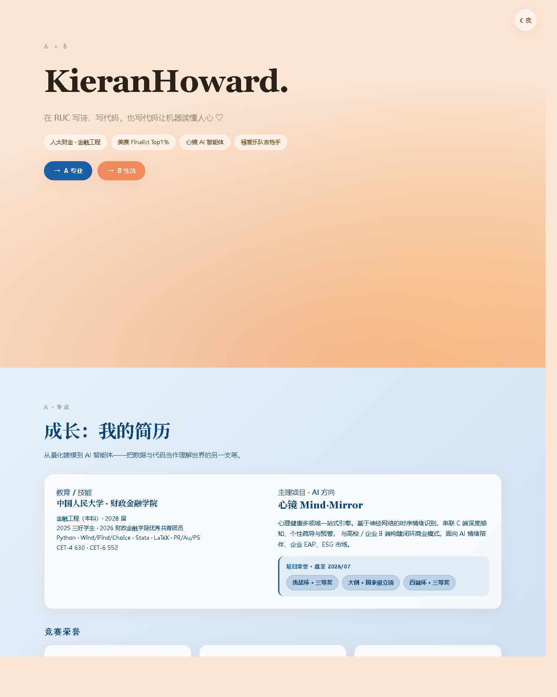
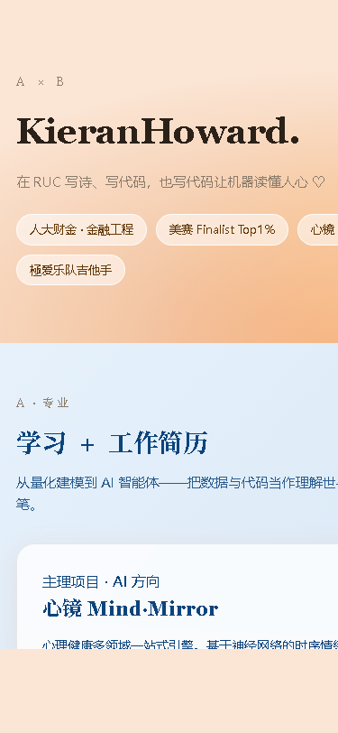
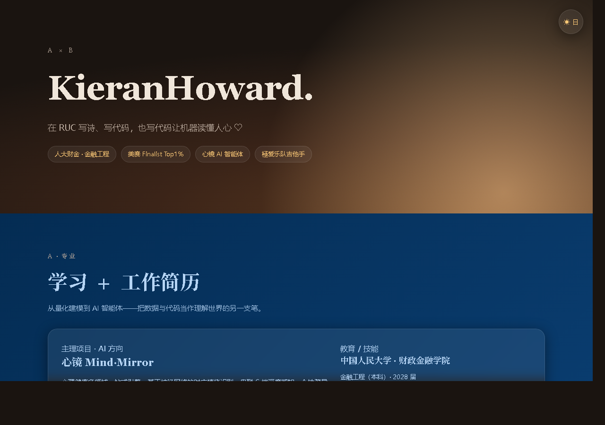

一个把「金融 × AI × 吉他」并置在同一页里的双面个人站点——严谨与浪漫，共用一套代码。
A single-page personal site that places Finance × AI × Guitar side by side — rigor and romance, sharing one codebase.
这不是一份普通的名片网页，而是一个可以双击打开、离线运行、又能讲清楚「我是谁」的小作品。
Not just another business-card page — a small, offline-runnable artifact that actually explains who I am.
大多数个人主页只展示一个面向：要么全是简历，要么全是爱好。这个站点刻意做成双面——左边是「成长：我的简历」，右边是「極爱乐队与我的吉他」。两块篇幅大致 1:1，用一条从深海蓝到蜜橙的渐变线隔开，像把两本不同气质的笔记本订在了一起。
整站只有一个 index.html：所有样式写在 <style>，所有逻辑写在 <script>，没有任何框架、打包器或外部资源。五张图片（乐队 logo、海报、公众号头像、二维码、视频号头像）全部以 base64 内联，所以它能完全离线、双击即开。
Most personal homepages show a single face — all résumé, or all hobbies. This site is deliberately two-sided: on the left, “Growth: My Résumé”; on the right, “JIAI Band & My Guitar”. The two halves are roughly 1:1, separated by a gradient line running from deep ocean-blue to honey-orange — like two notebooks of different temperaments bound into one.
The entire site is a single index.html: all styles in <style>, all logic in <script>, with no framework, bundler, or external asset. Five images (band logo, poster, official-account avatar, QR code, video-account avatar) are inlined as base64, so it runs fully offline and opens with a double-click.
人大财金金融工程的底色：券商研究所实习、美赛 / 创新杯、以及心镜 Mind·Mirror 心理健康 AI 智能体项目。
Roots in Finance Engineering at RUC: sell-side research internships, MCM / innovation awards, and the Mind·Mirror mental-health AI agent.
極爱乐队（JIAI）的主笔与吉他手，自运营乐队公众号、自己的吉他视频号——温柔的孤独，热烈的纯粹。
Lead writer & guitarist of JIAI band, running its official account and a personal guitar video channel — tender solitude, fervent purity.
右上角圆形按钮一键切换，偏好写入 localStorage，刷新后保持；按钮文字也跟着变。
A round button toggles theme; the choice persists in localStorage and the label flips with it.
Hero 区两个彩色胶囊，点一下平滑滚到 A 或 B，颜色各自呼应分区主色。
Two colored pills in the hero smooth-scroll to Side A or B, each tinted to match its zone.
一个人的简历和爱好，往往是两套互相不说话的语言。简历讲「我做了什么」，爱好讲「我热爱什么」。把它们硬塞进一个模版，两边都失了真。
于是我用反差来处理：A 区走冷色深海蓝，配系统衬线大标题，像一份克制的在线 CV；B 区走暖橙 Glassmorphism，像一张被阳光照亮的个人仪表盘。冷与暖、理性与感性，在同一屏里对望，反而比「统一风格」更真实地描述了「我」。
A résumé and a hobby are usually two languages that never speak. The résumé says “what I did”; the hobby says “what I love”. Forcing both into one template flattens each.
So I leaned into contrast: Side A uses cool ocean-blue with serif headings — a restrained online CV. Side B uses warm orange Glassmorphism — a sunlit personal dashboard. Cool vs. warm, reason vs. feeling, facing each other on one screen — which describes “me” more honestly than any single unified style.
一个 index.html 含全部内容，无服务器、无网络、无依赖。
One index.html holds everything — no server, no network, no deps.
右上角按钮切换，localStorage 记忆，3 连点稳定。
Toggle in the top-right; localStorage keeps it; stable across rapid taps.
桌面双栏，375px 窄屏自动堆叠，无横向滚动。
Desktop two-column; collapses to single column at 375px with no horizontal scroll.
backdrop-filter 半透明卡片，日夜间都看得出层次。
backdrop-filter translucent cards keep depth in both themes.
公众号 / 视频号双卡，头像 + 二维码 base64 内联，附外链。
Official / video account twin cards with inlined avatars & QR, plus external links.
不放真名、手机号、邮箱、Token、学号。
No real name, phone, email, tokens, or student ID in the page.
| 项目 | Aspect | 实现 | Implementation |
|---|---|---|---|
| 语言 | Language | 原生 HTML + CSS + JavaScript | Vanilla HTML + CSS + JavaScript |
| 框架 | Framework | 无（不依赖 React / Vue / Tailwind） | None (no React / Vue / Tailwind) |
| 外部资源 | External | 无外部图片 / 字体 / 库；图片 base64 内联 | No external image/font/lib; images inlined as base64 |
| 主题 | Theming | CSS 变量 + body.dark 切换 | CSS variables + body.dark switch |
| 持久化 | Persist | localStorage 记忆日夜偏好 | localStorage remembers theme |
| 字体 | Fonts | 系统栈：PingFang/雅黑 + Georgia 衬线 | System stack: PingFang/YaHei + Georgia serif |
| 构建 | Build | build.py 注入 base64，一键重生成 | build.py injects base64; one-command regenerate |
三张截图分别对应：日间桌面、375px 窄屏、夜间模式。
Three screenshots: day desktop, 375px mobile, and dark mode.



下载仓库后，双击 index.html 即可在浏览器打开。无需服务器、无需联网、无需安装。
想改内容？所有素材与文案由 build.py 注入，改完运行一条命令即可重生成：
After cloning, double-click index.html to open it in a browser. No server, no network, no install.
To edit content: all assets and copy are injected by build.py; after changes, regenerate with one command:
窄屏测试：把窗口拖到约 375px 宽，确认无横向滚动即可。
Mobile check: drag the window to ~375px wide and confirm there is no horizontal scroll.
第一次认真写 backdrop-filter。关键不是模糊本身，而是卡片底色用半透明白、叠在暖橙渐变上，再配一层暖色（而非冷灰）低透明度阴影——这样亮背景不“飘”，暗背景不“脏”。
用「单页滚动分区」而非「左右双栏常驻」：桌面端 A/B 内部各自双栏，移动端堆叠。分区结构天然把两块各占一半屏幕高度，比双栏对开更好平衡，也更稳地满足“窄屏无横向滚动”。
因为不能用外部图片，5 张素材全部 base64 内联。视频号没有公开的网页 embed，所以做成「封面 + 标题 + 跳转链接」；公众号则头像 + 二维码 + 长按识别提示 + 文章外链，双卡并排。
心镜项目下抽出“项目荣誉 · 截至 2026/07”，用浅蓝背景 + 深海蓝竖条包住 3 个奖项。给数据一个出处与时间，比单纯列三个胶囊更有“被认证”的分量。
My first serious use of backdrop-filter. The trick isn’t the blur — it’s a translucent white card over a warm gradient, plus a warm (not cold-gray) low-opacity shadow, so it neither floats on light nor gets muddy on dark.
I used a scrolling single-page with zones rather than two permanently-split columns: each side is two-column on desktop, stacked on mobile. The zoning naturally gives each half its own screen height — easier to balance than split panes, and safer for the “no horizontal scroll” rule.
No external images allowed, so all five assets are inlined as base64. WeChat video channels have no public web embed, hence “poster + title + link”; the official account gets avatar + QR + long-press hint + article links, as twin cards.
Under Mind·Mirror I pulled out “Project Honors · as of 2026/07”, wrapping three awards in a light-blue box with an ocean-blue bar. Giving data a source and a timestamp weighs more than three bare pills.
仓库中同样不含上述敏感信息；如需部署，请勿在提交历史里误带凭证。
The repo contains none of the above either; if you deploy, avoid committing credentials into history.